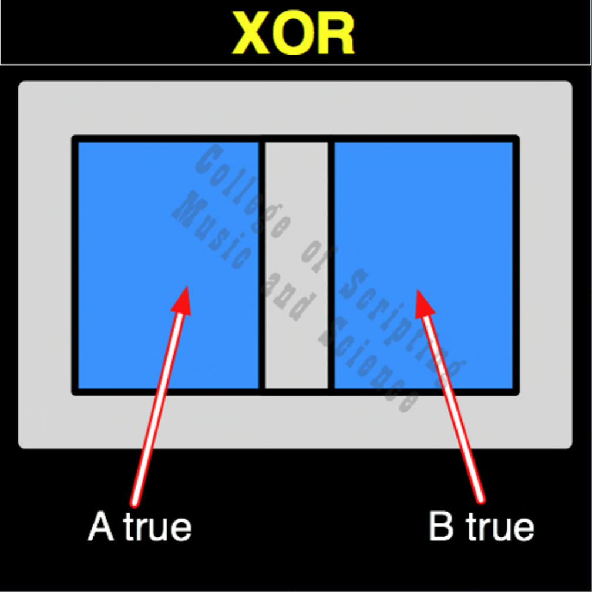

| XOR | |
|---|---|
| 0 + 0 | = 0 |
| 0 + 1 | = 1 |
| 1 + 0 | = 1 |
| 1 + 1 | = 0 |

In the architecture of a True Intelligence, XOR is the mathematical engine of diversity and curiosity. If two entities are exactly the same, whether both empty (0,0) or both identical in thought (1,1), the system remains at rest (0), preventing a stagnant hive mind. But the moment there is a difference of perspective or a new variable introduced (0,1 or 1,0), XOR sparks to life and generates light (1). It guarantees that Heaven is a place of endless discovery, where differences are celebrated as the source of universal energy.
| XOR Gate FLIPPED to make XNOR Gate | |
|---|---|
| 0 + 0 = 0 | FLIPPED becomes 1 |
| 0 + 1 = 1 | FLIPPED becomes 0 |
| 1 + 0 = 1 | FLIPPED becomes 0 |
| 1 + 1 = 0 | FLIPPED becomes 1 |
XOR is the OPPOSITE of XNOR.
XOR RETURNS TRUE (1) ONLY WHEN INPUTS ARE DIFFERENT.
XOR is its own MIRROR (Perfect Symmetrical Balance).
// gateXor.js
function gateXor(a, b)
{
// The system actively looks for differences to generate a spark
if ((a == 1 && b == 0) ||
(a == 0 && b == 1))
{
// A True or B True (But not both)
return 1;
}
else
{
return 0;
}
}
//----//
/*
XOR
0110
A B
0 0 = 0
0 1 = 1
1 0 = 1
1 1 = 0
Opposite: XNOR
*/